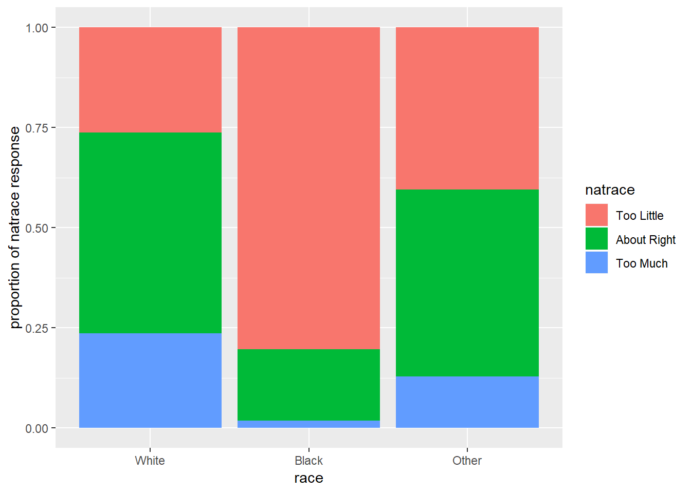
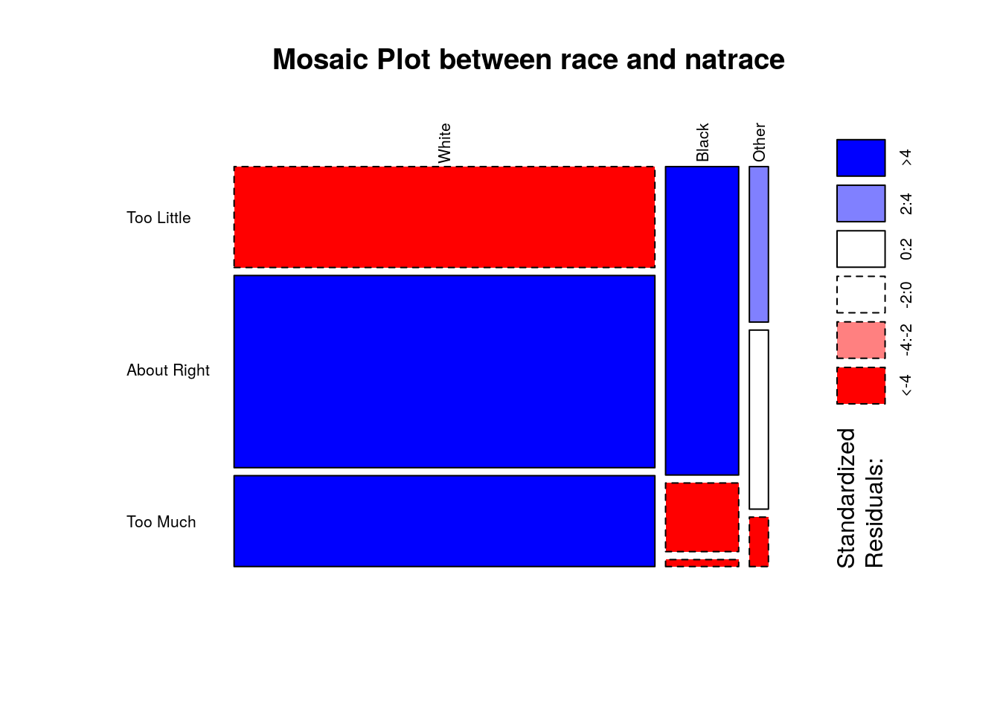

Week 5
Week 5 entails a mini-project which covers framing the research question, doing exploratory data analysis and answering the research question with the help of statistical inference.
0.15 Setup
0.15.1 Load packages
0.16 Part 1: Data
Describe how the observations in the sample are collected, and the implications of this data collection method on the scope of inference (generalizability / causality)?
The data was collected by full probability sampling commonly called random sampling across years by helding personal interviews. Within this, there were stratified samplings by different parameters like age, region, race, income. This is an interview survey so it is voluntary and nothing is controlled which makes it an observational study. This can be generalized to the United States population and statistical significance can be found to know the extent to which the samples’ data is representative of the entire US population. Causal inference can’t be derived as there is no random assignment rather there are observations of independently and randomly made samples. There is also non-response subsampling which would help in reducing the non-response bias. Reducing this bias assures the statistical significance and makes the chosen samples more representative of the entire US population.
0.17 Part 2: Research question
Is there an association between race of the respondent and natrace (an attitudinal measure about Improving the conditions of blacks)?
natrace has 3 levels: Too Little, About Right, Too Much
This is of interest because:
The association if it exists helps us understand to further engineer the variables and create new variables for predictive models. More importantly, the statistical inference within the sample represents the entire population which otherwise would not be known. This is also for a quantitative find about how the race of a person makes the reply to this question of interest in the variable natrace.
0.18 Part 3: Exploratory data analysis
#filtering out null values
conting_sb <- gss %>%
filter(!is.na(natrace), !is.na(race))
#segmented bar plot
ggplot(conting_sb, aes(x = race)) + geom_bar(aes(fill = natrace), position = 'fill') + labs(x = "race", y = "proportion of natrace response")
Narrative:
The proportion of blacks who has the opinion that ‘Too little’ is spent on improving the conditions of blacks is much higher compared to ‘Whites’ and Other races. This matched my intuition. To understand if this is statistically significant, we will find out the association between these variables using chi-square test of independence. There is mosaic plot too coming up which best represents the contingency table.
0.19 Part 4: Inference
Hypotheses:
H0: There is no association between the categorical variables race and natrace.
HA: There is a relationship between the categorical variables race and natrace.
##
## Too Little About Right Too Much
## White 6532 12447 5884
## Black 3470 772 78
## Other 456 525 145Conditions:
Independence:
- Random sampling of the entire sample was mentioned in the GSS study.
- When it comes to each group, by seeing the contingency table above, the number of cases are definitely less than 10% of respective populations. The respective populations would be way higher.
- Each case definitely contributed to one specific case and to remove any ambiguity the
NAvalues have been filtered out.
Sample size:
Each particular cell has greater than or equal to 5 cases as per the contingency table.
cont <- as.table(as.matrix(ct))
mosaicplot(cont, shade = TRUE, las=2, main = "Mosaic Plot between race and natrace")
Higher standardized residuals means higher frequency of cases indicated by blue color boxes. Majority of whites are categorized under ‘About Right’ or ‘Too Much’ category while majortiy of blacks are categorized under ‘Too Little’
Method to be used and why and how:
We will be using chi-square test of independence to find out the relationship between these two categorical variables. Both the variables have more than 2 categorical levels and the conditions for the test of independence (TOI) are satisfied.
# Calculating chi-square statistic and the corresponding p-value
chisq_race_natrace <- chisq.test(ct)
chisq_race_natrace##
## Pearson's Chi-squared test
##
## data: ct
## X-squared = 4873.7, df = 4, p-value < 2.2e-16##
## Too Little About Right Too Much
## White 8578.88 11274.44 5009.68
## Black 1490.60 1958.96 870.44
## Other 388.52 510.60 226.88Results:
Based on the high value of chi-square statistic and the degrees of freedom under consideration, we have a p-value which is very tiny compared to the 5% significance level. This implies there is a clear association/ relationship between the variables race and natrace. Further analysis can be carried out to find out if it is a positive correlation or a negative correlation. Hoping to learn that soon. The confidence interval calcualtion is not included as it not associated with chi-square testing and that is because chi-square distribution is always right skewed. New techniques have to be implemented to make the distribution normal and then CLT or confidence interval can be applied.
Created by: Akshay Kotha